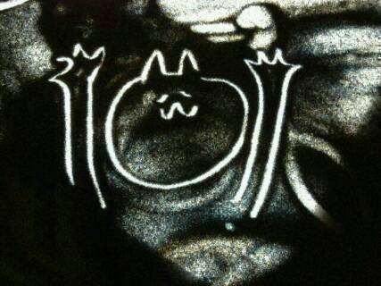

| 2014/01 14 Tue | ひめたん(*>ω<*)そ の395 |
前回の乃木どこは
かくし芸大会第二弾！
私たちはサンドアートをしました(＊^ω^＊)
みなさんサンドアートって
ご存知ですかね？
砂の中に絵を描くんですよー

これね、砂が敷いてあるボードの上で
指で絵を描くのねー
そしたらその部分だけ白くなるからね
それをライトで照らしたらね
おーきれいーってなるの！
まいまい (深川麻衣ちゃん)
万理華 (伊藤万理華ちゃん)とひめたん
３人でやったんだけどね
ふたりとも絵が上手だから
難しいことはふたりに任せることにしたんだよー
バレてたかしらー♪んふふー
ひめたんが描く部分は
いろいろと安定感に欠けるのよね(´・ω・｀)
はじめて先生の絵を見た時は
できるかなーって不安だったけど
失敗したらそれもそれで味になるかなって
ポジティブに考えることにしました！
朗読も手伝ってくれて
ステキなかくし芸になったんじゃないかな☆
ほかのみんなもステキだったよねー
そうそう
武道館のリハとちょうど平行して
かくし芸の練習やってたから
みんなあの時期はほんとにがんばったんだよー
ダブルダッチチームとか中国ゴマチームは
体力的に辛かったんじゃないかなー
サンドアートチームはね
みーんなのんびり屋さんだから
練習の時もふわふわーってしてたのー
飯面先生ありがとうございました！

捕まってしまいました。
そうそう！
川後さん (川後陽菜ちゃん)と
やっとふたりでカフェ行ったの∩( ^ω^ )∩
ほら、ひめたんさ、
前の乃木どこでも指摘されてたとおり
付き合いが悪いとよく言われるのよね←
なんだけどね
この前お仕事終わりにふらーっと
お話ししたい！ってなって
ついにふたりでカフェいったー♪♪
楽しかったよー＊
んんんのぞきこみっ

 平和島ってどんなイメージある？
平和島ってどんなイメージある？
波がおだやかで
カモメが飛んでそう！
あとヤシの実がなってそう
ファンが香港から来ることができる？
できます！
日本へぜひおいでくださいませ
一緒に楽しみましょー(((o(*゜▽゜*)o)))
ひめたんカッコイイです。
どうしたらそんなにカッコ良くなれるのですか？
それは嬉しいですが
そうかなあ。ひめたんかっこいーのかな
あれじゃないですかー？
一度決めたことを突き通すこととか大事だと思うの
りぼん！とかねびーむ！とかね
ちょっと質問なんだけど...
ブラックひめたんっているの！？
もう一度聞くよ！
ブラックひめたんっているの！？
声を大にして言いたい！！！
存在自体は否定しないけど
タチの悪い子ではないです！
「お菓子食べたい...」って若月が言ったから
「食べちゃえ食べちゃえー」って煽ってみるとか
そーゆーレベルです！
......タチ悪いな(´・ω・｀)でもそーゆーレベル！
「ひめきゅん」ってなんですか？
ひめたんビームはどんな効果があるのですか？
ひめたんのことを応援してくださってる方を
「ひめきゅんさん」って呼ばせていただいてます♪
いつでも仲間入り大歓迎よー
ひめたんびーむの効果は
みなさんをきゅんきゅんさせられる必殺技
ってことでいちおうやってますが
効き方は個人差があるみたいで......
ひめたんはいつも電車の中で
どういうことをしていますか？
そうですねー
主にブログの質問を集めて答えたり
音楽聞いたりしてます！
そーいや最近うたた寝することが減りましたどや。
ひめたんのブログの
コメント欄下２ケタに46を踏んだ方へ
手書きでコメ返するコーナー
＼ ひめたん46 ／

いつもコメントありがとうございます(＊^ω^＊)
サンドアート泣きそうになった！って
すーごいたくさんの方が言ってくださって
嬉しいーやってよかったー♪
中３組推しのみなさん
月刊エンタメ発売期待しててね☆
正式名称教えて！って方が
たくさんいらっしゃったけど
それは３人のヒミツなんですごめーんねっ
そうそう、コメント読んでて思った
もうすぐ更新400回になるんだね！
(＊´・ω・＊)
コメント(435)
2014/01/14 23:48